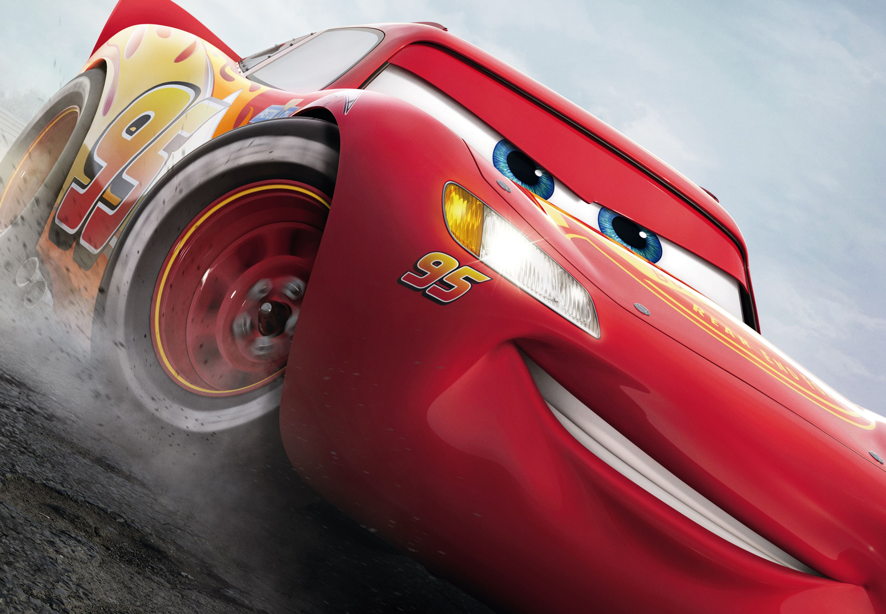
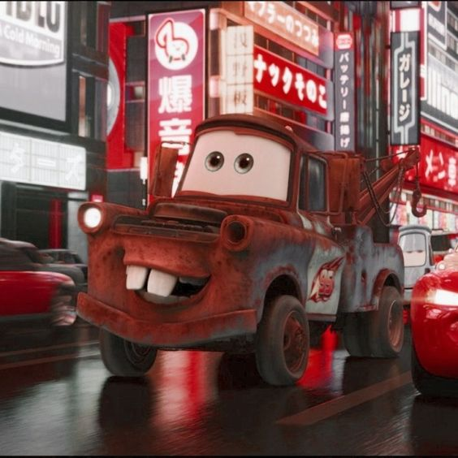
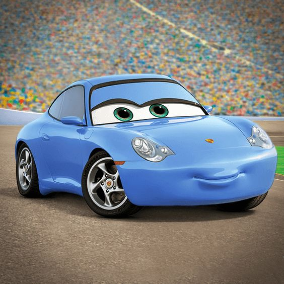
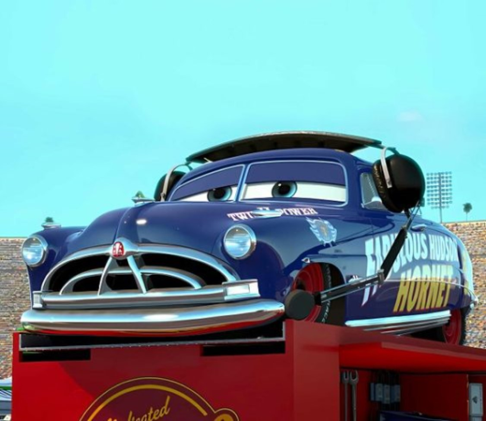

McQueen
Dublador: Owen Wilson
Um carro de corrida ambicioso e competitivo, que aprende importantes lições sobre amizade e humildade em Radiator Springs.

Mate
Dublador: Larry the Cable Guy
Um simpático caminhão-guincho e melhor amigo de McQueen, que o acompanha em suas aventuras.

Sally Carrera
Dublador: Bonnie Hunt
Uma elegante carro conversível que é advogada em Radiator Springs e se torna amiga de McQueen.

Doc Hudson
Dublador: Paul Newman
Um veterano carro de corrida, agora o juiz da cidade, que ensina valiosas lições a McQueen.